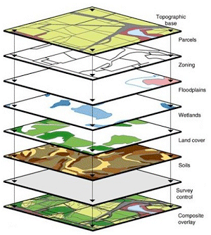
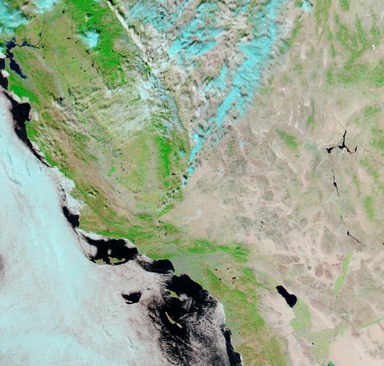
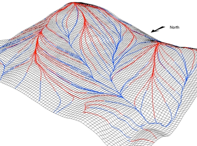
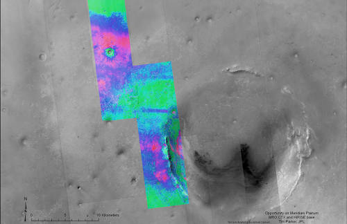
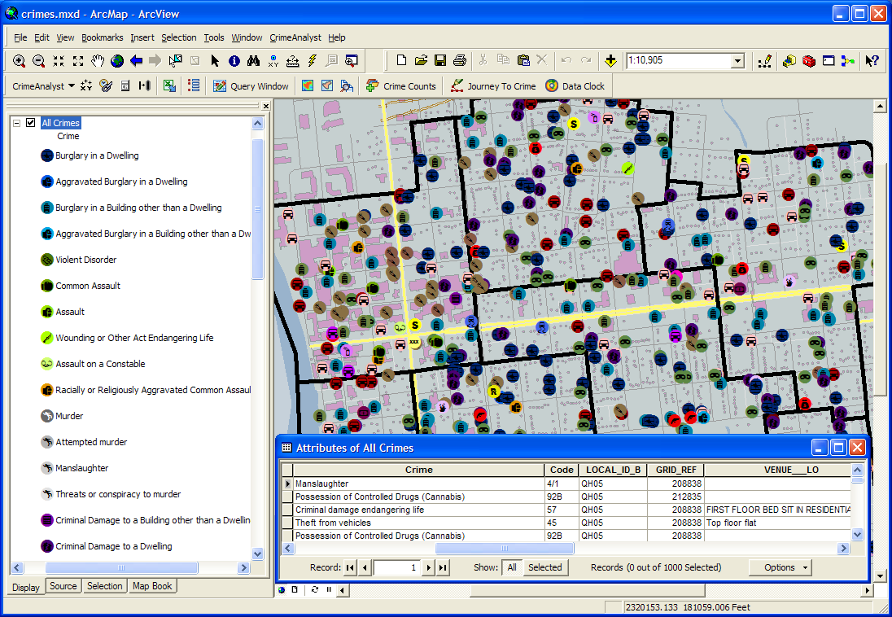
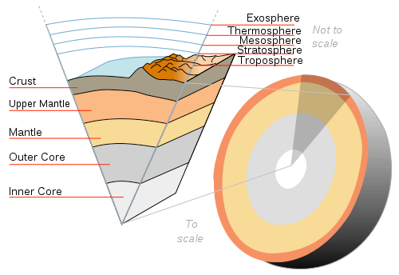
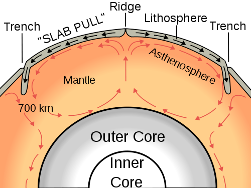

GIS concepts
David Orme
October 23 2016
What is a GIS?
    
What is a GIS?
Many things to many people but at core is any system used for:
- creating,
- storing,
- manipulating,
- analysing and
- presenting geographic information
What is geographic information?
Any piece of data that can be located in space, using:
- A set of coordinates
- A known coordinate system
Without both of these bits of information, we do not have geographic information!
Spherical coordinates
Latitude:
- an angle above or below the equator
- points of equal latitude form a parallel
- distance between parallels is constant*
Spherical coordinates
Longitude:
- an angle around the equator
- points of equal longitude form a meridian
- distance between meridians varies
Spherical coordinates
Latitude and longitude
- 90°0’0” E, 30°0’0” N
90.00 E, 30.00 N
- Can include height:
Near Lhasa, Tibet - ~ 5,500m

Geographic coordinate system
- The Earth is not a sphere
- ~ 1 in 298 flattening
- Estimated reference ellipsoid or datum.
| Name | requator (m) | rpoles (m) |
|---|---|---|
| Airy 1830 | 6,377,563.4 | 6,356,256.91 |
| Bessel 1841 | 6,377,397.16 | 6,356,078.96 |
| Clarke 1866 | 6,378,206.4 | 6,356,583.8 |
| International 1924 | 6,378,388 | 6,356,911.9 |
| WGS 1984 | 6,378,137 | 6,356,752.31 |
Geographic coordinate system
- Unfortunately, the Earth isn’t a ellipsoid either.
- Distribution of mass is uneven and dynamic
 
Geographic coordinate system
Geoid
- Surface of equalgravitational force
- Up and down are perpendicular to the local geoid
- A level surface is tangent to the local geoid
Geographic coordinate system
WGS 84
- Combined datum and geoid giving a standard global coordinate system
- Uses modern satellite data to provide ellipsoid measurements and gravity model
- Used by GPS
- Prime meridian: 0°0’5.31”E !
Local geographic datum
- The fit between a geoid and a datum varies in space
- Global models, like WGS 84, work well on average
- Countries adopt local datum models that fit better locally
Local geographic datum
- British National Grid uses the OSGB 36 datum
- Same latitude & longitude + different datum = datum shift
- In Cornwall, a WGS 84 point is ~70 m east and ~ 70 m south of OSGB 36.
- The shift varies nationally
Datum shift
Spherical geometry
- Great circles
- Spherical ‘triangle’
- Spherical geometry:
- exact and fast
- Ellipsoidal geometry:
- iterative and slow
Spherical geometry
- Globes not convenient or easily scalable
- Precise calculations slow
- Not easily useable on flat screen or on paper
- Need a flat representation of space
Projected coordinate systems
- It is impossible to project an spherical surface onto a plane without distortion (Gauss, 1827).
- The ellipsoid surface of the Earth for small distances (~ 10 km) is flat enough for simple purposes but for anything else…
Projected coordinate systems
Map projections can preserve:
- Shape: conformal maps
- Area: equal-area maps
- Distance: equi-distant maps
- Direction: azimuthal maps
But most projected coordinate systems can only preserve one of these things.
Projected coordinate systems
Tissot indicatrix:
- An circle on the surface of the Earth.
- All points on the edge are equidistant from the center.
- Show distortion of ellipsoid surface on planar projections
Projected coordinate systems
Equirectangular : Treat latitude and longitude as X and Y
Projected coordinate systems
Classification according to mapping to planar surface:

Projected coordinate systems
Gnomonic: planar, preserves bearings from a single central point, but little else.
Projected coordinate systems
Cylindrical: preserves area, not shape
Projected coordinate systems
Mercator: preserves shape, not scale
Projected coordinate systems
Fuller Dymaxion: compromise projection
Geographic data
- A Coordinate system and:
- Vector data: coordinates of points, lines, polygons
- Raster data
- grid data
- satellite and aerial images
Raster data
An image covering a continuous surface
- Made up of individual pixels, each with a value
- Categorical: land cover, species presence
- Continuous: temperature, precipitation
- Has a resolution (pixel size)
- Needs origin and coordinate system
Raster data
Vector Data
- A set of features, containing one of:
- Individual points, or sets of connected points forming lines or polygons
- Needs a coordinate system
- Coordinates are a precise location, but may have precision or accuracy information
- Features may have an attribute table.